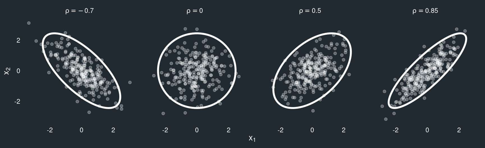

PS3192: Unsupervised learning
Matteo Lisi
Supervised vs. unsupervised learning
Supervised learning: training data contains a set of input features (predictors) and target labels/outcome.
Unsupervised learning: learning patterns from unlabeled data.
Supervised vs. unsupervised learning
Supervised Learning
- We have a training dataset containing some with input features \(X\) and target labels/outcomes \(y\)
- The algorithm learns a function \(f(X)\) that predicts \(y\) accurately
- Learning is achieved by minimising a cost or loss function (i.e. an error metric that tells us how bad the predictions are compared to the observed \(y\))
- Examples: Regression (continuous outcomes), Classification (categorical outcomes)
Unsupervised Learning
- We only have input features \(X\), with no labeled outcome
- The algorithm finds structure in the data (e.g., clusters, latent factors)
- Much less well-defined problem since we don’t know usually know in advance what to look for.
- Examples: Clustering (e.g., gaussian mixture models), Dimensionality Reduction (PCA)
Unsupervised learning: some examples
Clustering
Divides the training set into groups of similar examples. Each example should be more similar to examples in its group than to other groups.Dimensionality reduction
Transform high-dimensional data (e.g. many features/predictors) into a lower-dimensional representation that still retain some meaningful properties of original data.
Example in psychology: exploratory factor analysis.Density estimation
Learn a probability distribution (probability density function or pdf) from data.Representation learning
Learn structured representations from raw data, often mapping high-dimensional categorical data into a continuous space.
Example: large language models (LLM) like ChatGPT represent words as “dense vector embeddings” — sets of numbers that indicate where a word lies along different semantic dimensions.
Clustering examples:
- Personality types:
- Identify distinct personality profiles based on questionnaire responses.
- Example: clustering Big Five traits into personality “types.”
- Mental health diagnostics:
- Discover patient subgroups based on symptom patterns for tailored interventions.
- Behavioral data segmentation:
- Group participants based on response patterns or other measures.
A simple clustering algorithm: \(k\)-means
- Partition the data into \(k\) categories (clusters).
- The “\(k\)” denotes the requested number of clusters (a parameter that is set from the user).
Start by creating \(k\) cluster at random, each defined by the coordinates of its mean value (centroid).
Alternate between two steps:
- Assignment step: assign each datapoint to the cluster with the nearest centroid.
- Update step: recalculate the mean (centroid) of each cluster from the datapoints assigned to it.
Stop when the cost function — sum of within-cluster squared errors (distances from centroid) cannot be improved anymore.

Limitations of \(k\)-means clustering
“Hard” clustering method: each point is assigned to one and only one cluster; there is no uncertainty measure that tells us how confident we can be in the cluster assignment of each point.
No flexibility in cluster’s shape: \(k\)-means tend to find only clusters of similar shape and spatial extent
Other (less important) limitations of \(k\)-means clustering are its sensitivity to initialization and to outliers.
Gaussian Mixture Models (GMM)
Some of these limitations can be overcome with a more sophisticated, probabilistic characterization of clusters.
In this approach, known as mixture modelling we assume that the data comes from a set of distinct sub-populations, each with its own characteristics. When these sub-populations are assumed to be Gaussian, we have a Gaussian Mixture Model or GMM.

Gaussian Mixture Models (GMM)
For this to work, we need more than just a centroid to represent each cluster/sub-population:
- the mean;
- the variance-covariance matrix
Gaussian distribution (recap)
Simple univariate Gaussian distribution
Unbounded, bell-shaped distribution, characterised by two parameters: the mean (\(\mu\)) and the standard deviation (\(\sigma\))
\(x \sim \mathcal{N}(\mu=1, \sigma=2)\)
\(p(x) = \frac{1}{\sigma \sqrt{2 \pi}} e^{-\frac{1}{2}\left(\frac{x-\mu}{\sigma}\right)^2}\)
Gaussian distribution (recap)
Multivariate Gaussian distribution
A generalization of the Gaussian distribution to data with more than one dimension/component:
Each datapoint is represented as a vector, i.e., an ordered set of numbers (one for each dimension).
Each dimension/component has its own mean.
Instead of a single standard deviation, we use a variance-covariance matrix, which specifies:
- the variance (spread) for each dimension,
- the covariance (correlation) between dimensions.
Variance-covariance matrix example:
For a bivariate Gaussian (2 components, \(x_1\) and \(x_2\)), \(\left[x_1, x_2 \right] \sim \mathcal{N}(\left[\mu_1, \mu_2\right], \Omega)\), we have a 2-by-2 variance-covariance matrix:
\[\Omega = \left[ \begin{array}{cc} \text{Var}(x_1) & \text{Cov}(x_1, x_2) \\ \text{Cov}(x_1, x_2) & \text{Var}(x_2) \end{array} \right]\]
where:
\(\text{Var}(x) = \sigma_{x}^2\)
\(\text{Cov}(x_1, x_2) = \rho \,\sigma_{x_1}\sigma_{x_2}\), that is the covariance can be represented as the product of the 2 standard deviations, multiplied by a correlation coefficient \(\rho\).

Gaussian Mixture Models (GMM)
Each “cluster” is modelled as a Gaussian sub-population with its own mean vector and variance-covariance matrix.
Each component (sub-population) has a mixture weight, which indicates the probability that a randomly selected datapoint belongs to that particular sub-population.
Some advantages over \(k\)-means are:
- Flexibility in shape: Clusters can vary in size, shape, and orientation.
- Soft cluster assignments: No hard boundaries between clusters. Sub-populations can overlap substantially, and each datapoint can have partial membership in multiple clusters (probabilistic assignment).
A GMM provides, for each datapoint, a vector of probabilities representing how likely it is that the it belongs to each cluster (to obtain a “hard assignment” we can pick the highest probability)
Number of clusters & model selection in GMM
A key challenge in Gaussian mixture modeling (GMM) is deciding how many clusters to use.
In addition, we must choose a suitable covariance structure for the clusters.
- For instance, clusters may be assumed spherical (uncorrelated), or to share the same variance (more details later).
GMM addresses these choices automatically through model selection criteria.
The Bayesian Information Criterion (BIC) is most commonly used:
- Models with different numbers of clusters are compared.
- The model with the best BIC score is typically selected as the optimal solution.
Gaussian Mixture Model in R: mclust package
GMM with mclust
----------------------------------------------------
Gaussian finite mixture model fitted by EM algorithm
----------------------------------------------------
Mclust VII (spherical, varying volume) model with 3 components:
log-likelihood n df BIC ICL
-3430.111 900 11 -6935.048 -7007.034
Clustering table:
1 2 3
148 592 160 As it is often the case, summary() only print key information, there is a lot more in the fitted model object. Using the str() is one way to get a list of what is included:
List of 16
$ call : language Mclust(data = dat)
$ data : num [1:900, 1:2] 3.57 7.99 4.37 2.76 6.17 ...
..- attr(*, "dimnames")=List of 2
.. ..$ : NULL
.. ..$ : chr [1:2] "X1" "X2"
$ modelName : chr "VII"
$ n : int 900
$ d : int 2
$ G : int 3
$ BIC : 'mclustBIC' num [1:9, 1:14] -7552 -7565 -7321 -7287 -7201 ...
..- attr(*, "dimnames")=List of 2
.. ..$ : chr [1:9] "1" "2" "3" "4" ...
.. ..$ : chr [1:14] "EII" "VII" "EEI" "VEI" ...
..- attr(*, "G")= num [1:9] 1 2 3 4 5 6 7 8 9
..- attr(*, "modelNames")= chr [1:14] "EII" "VII" "EEI" "VEI" ...
..- attr(*, "control")=List of 4
.. ..$ eps : num 2.22e-16
.. ..$ tol : num [1:2] 1.00e-05 1.49e-08
.. ..$ itmax : int [1:2] 2147483647 2147483647
.. ..$ equalPro: logi FALSE
..- attr(*, "initialization")=List of 3
.. ..$ hcPairs: 'hc' num [1:2, 1:899] 324 636 324 677 324 890 324 577 324 613 ...
.. .. ..- attr(*, "initialPartition")= num [1:900] 1 2 3 4 5 6 7 8 9 10 ...
.. .. .. ..- attr(*, "unique")= int 900
.. .. ..- attr(*, "dimensions")= int [1:2] 900 2
.. .. ..- attr(*, "modelName")= chr "VVV"
.. .. ..- attr(*, "call")= language hc(data = data, modelName = mclust.options("hcModelName"), use = mclust.options("hcUse"))
.. .. ..- attr(*, "use")= chr "SVD"
.. .. ..- attr(*, "data")= num [1:900, 1:2] 0.0103 0.0456 -0.0975 -0.0818 -0.0664 ...
.. ..$ subset : NULL
.. ..$ noise : NULL
..- attr(*, "warn")= logi FALSE
..- attr(*, "n")= int 900
..- attr(*, "d")= int 2
..- attr(*, "oneD")= logi FALSE
..- attr(*, "criterion")= chr "BIC"
..- attr(*, "returnCodes")= num [1:9, 1:14] 0 0 0 0 0 0 0 0 0 0 ...
.. ..- attr(*, "dimnames")=List of 2
.. .. ..$ : chr [1:9] "1" "2" "3" "4" ...
.. .. ..$ : chr [1:14] "EII" "VII" "EEI" "VEI" ...
$ loglik : num -3430
$ df : num 11
$ bic : num -6935
$ icl : num -7007
$ hypvol : num NA
$ parameters :List of 3
..$ pro : num [1:3] 0.158 0.674 0.168
..$ mean : num [1:2, 1:3] 2.98 8.02 5.45 4.98 8.03 ...
.. ..- attr(*, "dimnames")=List of 2
.. .. ..$ : chr [1:2] "X1" "X2"
.. .. ..$ : NULL
..$ variance:List of 6
.. ..$ modelName: chr "VII"
.. ..$ d : int 2
.. ..$ G : int 3
.. ..$ sigma : num [1:2, 1:2, 1:3] 0.27 0 0 0.27 2.53 ...
.. .. ..- attr(*, "dimnames")=List of 3
.. .. .. ..$ : chr [1:2] "X1" "X2"
.. .. .. ..$ : chr [1:2] "X1" "X2"
.. .. .. ..$ : NULL
.. ..$ sigmasq : num [1:3] 0.27 2.534 0.295
.. ..$ scale : num [1:3] 0.27 2.534 0.295
$ z : num [1:900, 1:3] 9.39e-01 8.46e-32 1.86e-06 9.40e-01 9.57e-20 ...
..- attr(*, "dimnames")=List of 2
.. ..$ : NULL
.. ..$ : NULL
$ classification: num [1:900] 1 2 2 1 2 3 1 2 3 3 ...
$ uncertainty : num [1:900] 6.05e-02 1.48e-10 1.86e-06 5.97e-02 5.31e-13 ...
- attr(*, "class")= chr "Mclust"The field fit$classification contains the “hard” assignment of data-points to clusters.
The field fit$z contains the probabilities that each datapoint belong to each cluster
Visualising results
Comparison with \(k\)-means
# Perform k-means clustering (3 clusters)
kmeans_fit <- kmeans(dat,
centers = 3)
# Add predicted cluster to the dataset
dat$cluster_kmeans <- factor(kmeans_fit$cluster)
# Plot k-means results
ggplot(dat,
aes(x = X1, y = X2,
color = cluster_kmeans)) +
geom_point(alpha = 0.8) +
theme_minimal() +
labs(title = "K-means Clustering",
x = "X1", y = "X2",
color = "cluster")
Model selection in mclust
By default, mclust tries all parametrizations of variance-covariance matrix, and up to 9 components
Bayesian Information Criterion (BIC):
EII VII EEI VEI EVI VVI EEE
1 -7551.993 -7551.993 -7558.775 -7558.775 -7558.775 -7558.775 -7565.180
2 -7565.119 -7278.653 -7490.524 -7281.517 -7497.973 -7286.082 -7463.134
3 -7320.692 -6935.048 -7327.459 -6941.833 -7294.907 -6953.556 -7334.256
4 -7286.880 -6960.094 -7266.353 -6966.290 -7259.291 -6986.346 -7244.108
5 -7200.874 -6985.576 -7206.346 -6991.876 -7218.239 -7018.360 -7213.405
6 -7144.827 -7003.755 -7151.442 -7010.151 -7174.953 -7040.426 -7158.099
7 -7165.264 -7028.188 -7171.887 -7033.499 -7201.834 -7071.017 -7178.494
8 -7160.411 -7053.046 -7166.847 -7059.154 -7218.390 -7104.762 -7169.938
9 -7133.254 -7071.940 -7132.348 -7077.232 -7154.250 -7118.450 -7135.946
VEE EVE VVE EEV VEV EVV VVV
1 -7565.180 -7565.180 -7565.180 -7565.180 -7565.180 -7565.180 -7565.180
2 -7208.383 -7436.430 -7203.606 -7345.224 -7212.119 -7351.503 -7209.669
3 -6948.534 -7295.650 -6959.817 -7271.455 -6960.199 -7261.075 -6973.171
4 -6972.955 -7229.232 -6993.628 -7225.750 -6992.850 -7240.081 -7012.560
5 -6998.249 -7216.935 -7023.065 -7214.273 -7024.058 -7184.379 -7049.712
6 -7016.348 -7170.415 -7041.071 -7181.320 -7047.370 -7205.852 -7073.190
7 -7039.644 -7206.070 -7072.414 -7207.707 -7077.117 -7231.924 -7116.035
8 -7065.124 -7177.877 -7100.918 -7172.031 -7109.289 -7212.995 -7146.980
9 -7083.531 -7183.268 -7132.322 -7187.962 -7135.627 -7179.092 -7171.743
Top 3 models based on the BIC criterion:
VII,3 VEI,3 VEE,3
-6935.048 -6941.833 -6948.534 Visualising model selection in mclust

Understanding variance-covariance parametrization
The type of model is identified by 3 letters, and their orders refer to the 3 main properties:
- 1st letter → Volume (overall size of the clusters)
- 2nd letter → Shape (ratios between cluster axes, or the “elongation”)
- 3rd letter → Orientation (direction of the ellipsoid in space)
Each characteristic can be either:
- E (Equal): identical across clusters
- V (Variable): different for each cluster
- I (Identity): restricted (spherical, no elongation or rotation), meaning spherical clusters.
For example, the model labelled EEI would be the most similar to \(k\)-means, as it correspond to spherical clusters with equal variance across dimensions.
GMM with more than 2 dimensions
tibble [344 × 8] (S3: tbl_df/tbl/data.frame)
$ species : Factor w/ 3 levels "Adelie","Chinstrap",..: 1 1 1 1 1 1 1 1 1 1 ...
$ island : Factor w/ 3 levels "Biscoe","Dream",..: 3 3 3 3 3 3 3 3 3 3 ...
$ bill_length_mm : num [1:344] 39.1 39.5 40.3 NA 36.7 39.3 38.9 39.2 34.1 42 ...
$ bill_depth_mm : num [1:344] 18.7 17.4 18 NA 19.3 20.6 17.8 19.6 18.1 20.2 ...
$ flipper_length_mm: int [1:344] 181 186 195 NA 193 190 181 195 193 190 ...
$ body_mass_g : int [1:344] 3750 3800 3250 NA 3450 3650 3625 4675 3475 4250 ...
$ sex : Factor w/ 2 levels "female","male": 2 1 1 NA 1 2 1 2 NA NA ...
$ year : int [1:344] 2007 2007 2007 2007 2007 2007 2007 2007 2007 2007 ...dat <- na.omit(penguins[, c("species", "bill_length_mm", "flipper_length_mm", "body_mass_g")])
fit <- Mclust(dat[,-1])
summary(fit)----------------------------------------------------
Gaussian finite mixture model fitted by EM algorithm
----------------------------------------------------
Mclust EEE (ellipsoidal, equal volume, shape and orientation) model with 3
components:
log-likelihood n df BIC ICL
-4751.497 342 17 -9602.185 -9620.434
Clustering table:
1 2 3
155 60 127 GMM with more than 2 dimensions
Using bill length, flipper length and body mass suggest 3 classes; we can plot the results as follow:

GMM with more than 2 dimensions
The mclust package contains also some handy functions to visualise the ‘true’ class (if available)

Exercise
- Use one of the dataset for clustering in the ‘coursework’ folder on Moodle and fit and evaluate a GMM model.